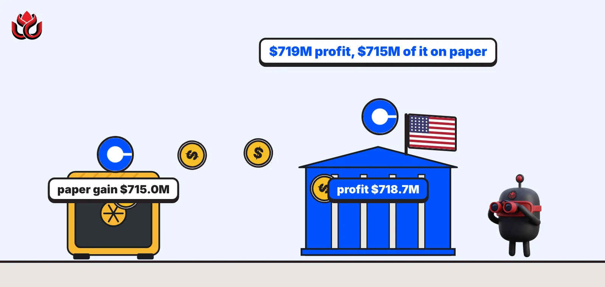
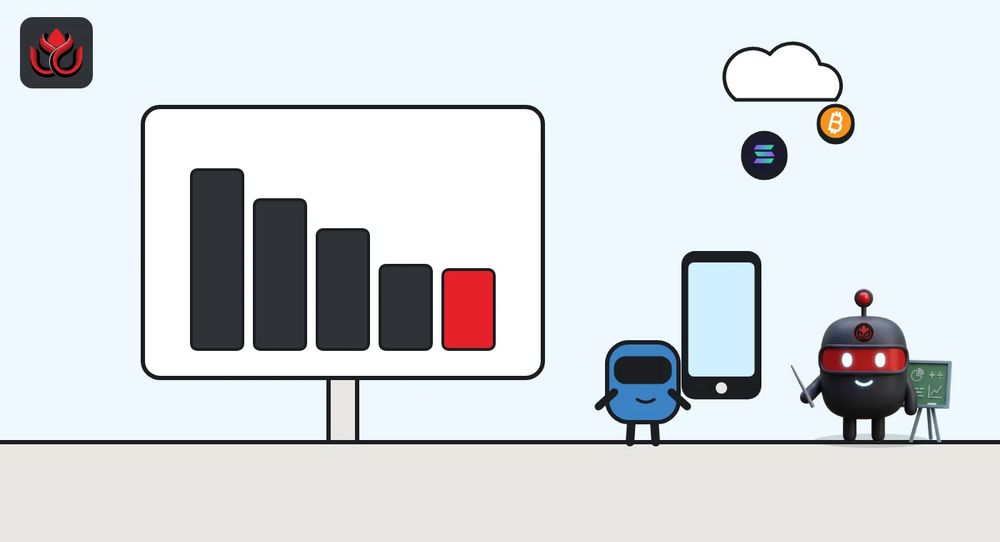
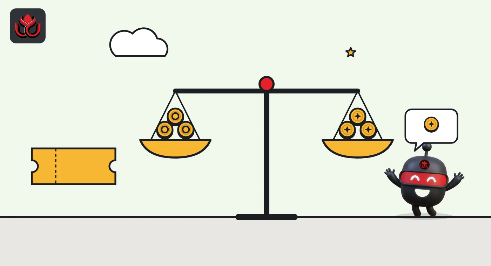

Coinbase made $719 million in Q3. Almost all of it came from its own crypto pile
Coinbase swung from a $359 million loss to a $719 million profit, but $715 million of that was a paper gain on crypto it holds. Retail spot trading volume fell 59% in a year, while prediction markets passed $200 million a year in revenue.

Key points
- Coinbase earned $718.7 million in Q3 2026, but $715.0 million of that was a paper gain on crypto it holds.
- Revenue was $1.22 billion, down 35% in a year and flat from Q2. Retail spot trading volume fell 59%.
- USDC balances on Coinbase hit a record, and prediction markets passed $200 million in annual revenue.
A profit built on paper gains
Coinbase made a $718.7 million profit in the third quarter of 2026, but $715.0 million of it came from a rise in the value of crypto the company holds. The results, filed on October 29, show net income of $2.51 per diluted share, against a loss of $359.5 million in the second quarter, according to its quarterly report (Form 10-Q).
Coinbase holds crypto on its own balance sheet as an investment and must value those coins at market price every quarter. That line, called gains on crypto assets held for investment, is where the $715.0 million came from. Strip it out and the profit nearly disappears.
Adjusted EBITDA, a rough measure of operating cash profit, was $333 million, up from $208 million in Q2, according to the company's earnings presentation. Coinbase said it was the 15th quarter in a row of positive adjusted EBITDA.
Where the revenue came from
Total revenue was $1.216 billion, down 35% from $1.869 billion in Q3 2025. Against the previous quarter it barely moved: Q2 2026 revenue was $1.220 billion, per the Q2 report.
- Transaction revenue (fees on trades) was $590.2 million, down 44% from a year earlier. Fees from retail users fell 47% to $450.1 million. Institutional fees fell 32% to $91.7 million.
- Subscription and services revenue was $570.2 million, down 20% from a year earlier but up from $555.1 million in Q2.
- Stablecoin revenue, mostly Coinbase's share of interest earned on the reserves behind USDC, was $306.9 million, down 5%.
- Blockchain rewards, mainly staking income, fell 54% to $85.7 million.
The filing says consumer spot trading volume fell 59% year over year and institutional spot volume fell 53%. Derivatives volume held up better, and equities and prediction markets grew.
Coinbase Q3 2026 net revenue by line
US$ million
Source: Coinbase Form 10-Q, Q3 2026. Other subscription and services is the $570.2 million segment total minus stablecoin revenue and blockchain rewards.

USDC and prediction markets carry more weight
Two lines held up while trading slumped. The first is USDC. The 10-Q says average USDC held in Coinbase products hit an all-time high. Higher balances added $84.6 million to stablecoin revenue, while lower interest rates took away $52.8 million. Coinbase also said it renewed its arrangement with Circle, the USDC issuer, on the same terms. The earnings presentation put the average USDC balance in Coinbase products at $22 billion, out of an average USDC market value of $73 billion in the quarter.
The second is prediction markets, where users buy yes or no contracts on real-world outcomes such as sports results. Coinbase said this business passed $200 million in annualized revenue, calling it one of its fastest-growing products by revenue in history. Revenue has grown at a compound rate of 82% a quarter since launch. The 10-Q adds that the product partly offset the fall in consumer trading fees, though exchange fees tied to it pushed up other transaction expenses by $35.4 million.
Coinbase also kept gaining share in a smaller market. Its share of global crypto trading volume rose to 10.7%, from 10.3% in Q2 and 5.6% a year earlier. Across the whole market, spot volume fell 6% and derivatives volume 11% from Q2, the presentation says.
Costs, buybacks and legal items
Management lowered its 2026 adjusted expense outlook by $100 million at the midpoint, to a range of $4.15 billion to $4.3 billion, the presentation shows. A restructuring announced on May 5, 2026, cut about 700 jobs, according to the 10-Q.
Buybacks slowed sharply. The 10-Q shows Coinbase bought back only 38,000 shares for $5.3 million in Q3, compared with $1.19 billion spent over the first nine months of the year. About $2.0 billion remains under its $4.0 billion program.
The filing also records a regulatory step after the quarter closed. On October 29, 2026, the New Jersey securities regulator told Coinbase it intends to rescind its summary penalty and cease-and-desist order over Coinbase's staking service. That is a stated intention, not a completed withdrawal.

Quarter over quarter: almost no change underneath
Set the Q3 numbers next to Q2 and the operating business looks flat. Transaction revenue slipped from $599.2 million to $590.2 million. Subscription and services rose from $555.1 million to $570.2 million, helped by stablecoin revenue climbing from $292.1 million to $306.9 million, according to the Q2 filing.
The swing in profit came almost entirely from one line. In Q2, Coinbase booked a net loss of $209.5 million on the crypto it holds for investment. In Q3 the same line was a gain of $715.0 million. That turned a $359.5 million net loss into a $718.7 million profit, a change of more than $1 billion with little change in revenue.
Derivatives helped soften the slump in spot trading. The 10-Q says the August 2025 purchase of Deribit, an options exchange, lifted derivatives revenue in the nine-month comparison by more than enough to offset the spot decline. Coinbase said it finished folding its INTX international exchange and Deribit together in October and expects some short-term swings in volume as traders adjust.
One legal case moved in Coinbase's favor this summer. In Underwood v. Coinbase, a court granted summary judgment for the defendants on most of the transactions at issue on July 30, 2026, the filing says. The case continues for a smaller set of trades, and the outcome of that part is uncertain.
Timeline
Coinbase closes its $4.3 billion purchase of derivatives exchange Deribit
Restructuring announced, cutting about 700 jobs, per the 10-Q
Q2 ends with a net loss of $359.5 million
Court grants summary judgment for Coinbase on most trades in Underwood v. Coinbase
Q3 ends
Q3 results filed; New Jersey signals it will drop its staking order
LC Insight analysis
This section is our reading of the facts above, not a statement of fact.
- The headline profit says more about the bitcoin price on September 30 than about Coinbase's business. Paper gains can reverse just as fast, as the Q2 loss showed.
- The mix is the real story. Subscription and services revenue is now almost as big as trading fees, so Coinbase is slowly becoming a company paid for holding money and running products, not just matching trades.
- We expect a weak October to weigh on Q4 trading revenue. Prediction markets and USDC are the main cushions, and both depend on things Coinbase does not control: sports calendars, state regulators and interest rates.
What's next
- Q4 transaction revenue after a weak October for crypto prices
- Whether New Jersey formally withdraws its staking order
- Growth in prediction market revenue and USDC balances
- Any restart of share buybacks
Disclaimer. This article is based on public information and the sources listed below as of the update time shown. It is for information only and is not investment, legal or tax advice. Figures may change as companies and authorities publish new data.